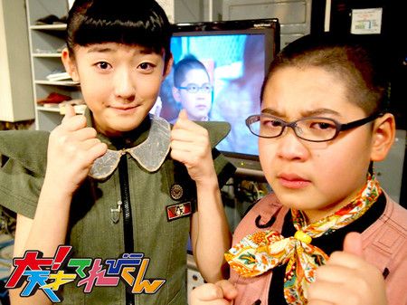
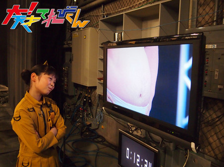
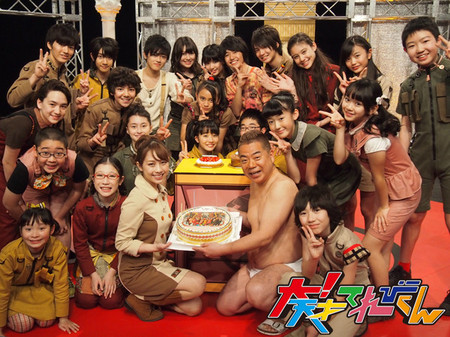
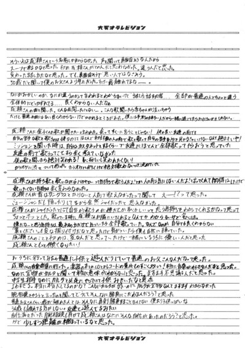

2014年03月27日 (木)【お知らせとご挨拶】大天才テレビジョン会長
皆様、こんにちは。大天才テレビジョン会長です。
今日はちょっと残念なお知らせがあります。
大天才テレビジョンはネオ渋谷区から「大！天才てれびくん」を放送していますが、この度、私たちの放送電波は「ネオ」のつかない世界に届かなくなってしまいました。
私は早速、大天才テレビジョン放送技術研究所略して大放研のふかわ主任に調査を命じました。ところが、「きっと星のめぐりがよくないのでしょうね。何か都合悪かったですか？」などと科学者とも思えぬとんちんかんなことを言っているばかりで、原因は不明です。
行方をくらましたままの編成局長、あるいは会社を逆恨みしている何とか大魔王が懲りずに何かたくらんでいるのかも知れませんが、確実な情報は何もありません。
これまで3年間、出川哲朗特命プロデューサーとてれび戦士たちは、長寿番組のよさを生かしながらもまったく新しい「天才てれびくん」を創り出そうと、「大！天才てれびくん」の制作に取り組んできました。
「天才てれびくんタロウ」の方が好きだったとか、「タロウ」に戻してほしいというご意見も数多くいただきましたが、出川Pは自らの信念たる「出川イズム」を揺るがせることなく、不器用ながらもまっすぐ真剣に邁進しました。これまでとはまた別の形で皆様に愛していただける番組となったのではないかと思います。
「天才てれびくん」シリーズは、常に新しいことに挑戦し続けることを運命づけられた番組です。全放送清く正しく美しく好感度向上委員会略して全放向のような団体や、時折来訪する謎のUFOや怪人物たちのちょっかいに負けることなく、てれび戦士たちは魅力的で新しい豊かな放送番組を今後も創造していくことでしょう。
ネオのつかない世界の皆様。電波は途切れてしまいましたが、いつかまたお会いできる日が来るかもしれません。そのときはまた、あたたかい応援をお願いします。
ああ、そろそろネオのつかないインターネットへの接続も切れそうです。
おなごり惜しいですが、このあたりで一旦お別れです。
テレビって本当にいいものですね。サヨナラ、サヨナラ、サヨナラ。
2014年3月27日
第19代 大天才テレビジョン 会長

追伸：ネオのつかない渋谷区にあるNHKという放送局が、3月31日から「Let’s天才てれびくん」という番組をどうやら始めるみたいですよ。こちらもまた別の魅力を持つ、新しい「天才てれびくん」だと思います。大天才テレビジョンの番組ではありませんが、よかったら観てあげてくださいね。
投稿者:大天才テレビジョン社員１号 | 投稿時間:19時00分 | 固定リンク


 " title="ソーシャルブックマークについて">
" title="ソーシャルブックマークについて">
※NHKサイトを離れます。
2014年02月25日 (火)大天才テレビジョン・ギネス世界記録達成！
祝 ギネス世界記録更新

本日の「大！天才てれびくん」、ご覧にいただけましたでしょうか。
大天才テレビジョンは今回、2つの世界記録に挑みました。
「お箸でピンポン球キャッチ 1分間」
陶子さんと竹原が昨年5月に挑んだ世界記録に再び挑みました。
なお、前回挑んだときの世界記録は27個でしたが、その後更新され、2月現在の世界記録は32個。
より高くそびえ立つ世界記録の壁。
2人は果敢にその壁に挑みましたが、結果は14個。
大人数に見守られ、期待をかけられたプレッシャーから、本来の力を発揮することが出来ませんでした。

競技が終わったあとのお2人。
陶子さんは「3年間のてれび戦士がいる前で記録更新できなくて申し訳ない」と言っていました。
竹原もこの表情です。
「身体に付箋貼り 5分間」
赤マント男、出現！…もちろん出川特命Pでございます。

最後はこの出川特命Pの身体にどれだけ多くの付箋を貼ることが出来るかという、ちょっと不思議な世界記録に挑みます。
これは、3年間にわたり出川特命Pが体現してきた「出川イズム ： どんなにくだらないことにも真剣に取り組む」に通じることがある！ということで、出川特命Pと鈴木AP、てれび戦士22人が世界に挑戦！
ではここで、この競技のルール説明です。
「身体に付箋貼り ルール」
制限時間 5分
付箋のサイズ 73mm 四方以上
貼る場所 皮膚
貼ってはならない場所 髪の毛 下着
貼られる人 1人（肌色か白色の下着姿）
貼る人 人数制限無し
※なお、制限時間終了から、10秒間の間にはがれた付箋は無効となります。

出川特命Pのあられもない姿に年頃のてれび戦士も困惑顔ですが、これはギネス世界記録で定められた正式な衣裳です。
ご容赦下さい。
さて、これまでの記録は、ケンブリッジ大学のSarah Greasleyさんたちが2011年にうち立てた454枚。
イギリスの名門大学に、大天才テレビジョンの24人がどう立ち向かうのか。

3年間で一緒のときを過ごしたてれび戦士も、そうでないてれび戦士も、
この5分間は分け隔て無く1つのチームとなり、出川特命Pに付箋を貼って貼って貼りまくりました。
そして記録は…
６７４枚！
なんとこれまでの記録を200枚以上も更新。堂々のギネス世界記録達成となりました。

出川特命Pとともに歩んできたてれび戦士育成計画、最後にとっても大きな成果をあげて完結です。

投稿者:大天才テレビジョン社員１号 | 投稿時間:21時30分 | 固定リンク
" title="ソーシャルブックマークについて">
※NHKサイトを離れます。
2014年01月27日 (月)【押忍！シャイ番長友情の旅】第２１回金子の日記
「押忍！シャイ番長友情の旅」21回目の放送、ご覧いただけましたか？
「カネヤンとなるいち」の友情ソング、「シャイニング」いかがでしたか？？
成瀬さんのやっている「ムード歌謡」という音楽ジャンルがベースになった、
2人ならではの、なんともいえない曲に仕上がりました。
曲作り・練習に計3日間かかりました。
成瀬さん、お忙しい中、本当にどうもありがとうございました！
シャイ番長と、成瀬さんのソロパートは、「相手に対して一番強く思った印象」を歌
詞にしました。
シャイ番長が歌った部分は、成瀬さんに対して思うことをシャイ番長が自分で歌詞に
したんですよ〜。
山あり谷ありの展開を、シャイ番長の日記でもお楽しみください。
左クリックをすると、原寸大になります。

投稿者:大天才テレビジョン社員１号 | 投稿時間:18時54分 | 固定リンク
" title="ソーシャルブックマークについて">
※NHKサイトを離れます。
2014年01月20日 (月)【押忍！シャイ番長友情の旅】第20回金子の日記
「押忍！シャイ番長友情の旅」20回目の放送、ご覧いただけましたか？
弾き語りミュージシャン成瀬晃一さんと友達になったシャイ番長。
友達探しをしているあいだも、何とかして自分が歌うことは避けよう
（カスタネットとかで参加してやりすごそう）と思っていたらしく、
カラオケに行くまで、成瀬さんは説得に1時間あまりかかったんです！
歌うのが、本当に本当に嫌だったんですね…。
いざ、カラオケに行って、成瀬さんがシャイ番長の好きなKAT-TUNを歌っても、
励ましたり優しく説得しても、まったく歌おうとしないシャイ番長に、スタッフは
この企画はもはやこれまでか、とあきらめました…。
が！
成瀬さんが、昔シャイだったという驚愕の事実が発覚！
そうこうして、シャイ番長が、1曲無事に歌うことができたときには、それだけでス
タッフは感動してしまいました…。
成瀬さん、ありがとうございます！
カラオケで急速に仲良くなっていった2人。
次回、2人ならではの、衝撃的な（？）友情ソングを作ります。
どうぞお楽しみに〜！
山あり谷ありの展開を、シャイ番長の日記でもお楽しみください。
左クリックをすると、原寸大になります。

投稿者:大天才テレビジョン社員１号 | 投稿時間:18時54分 | 固定リンク
" title="ソーシャルブックマークについて">
※NHKサイトを離れます。